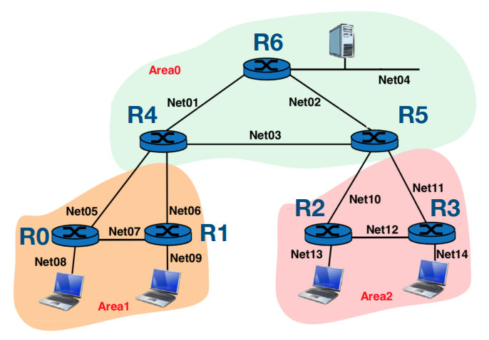
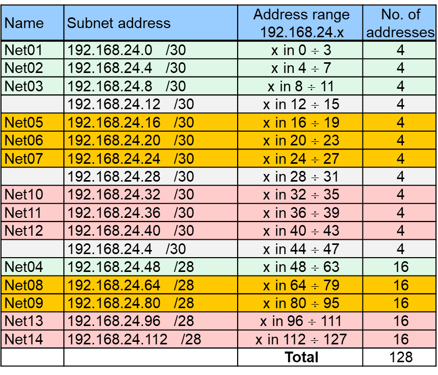
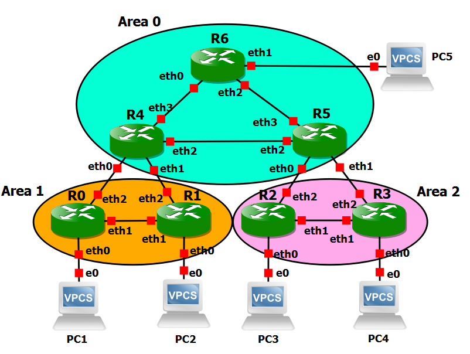
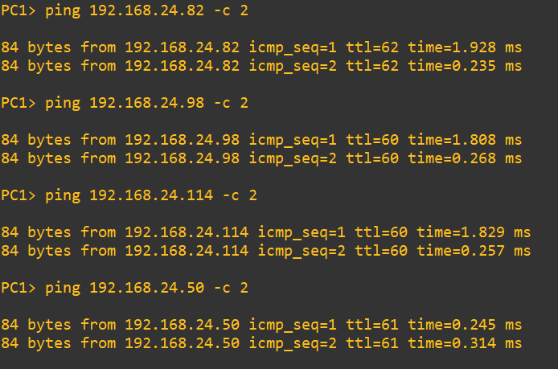
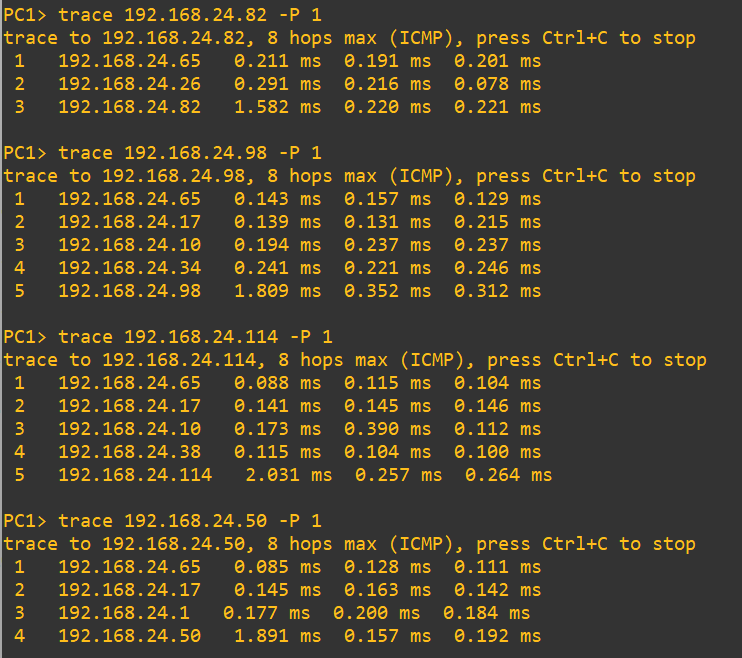
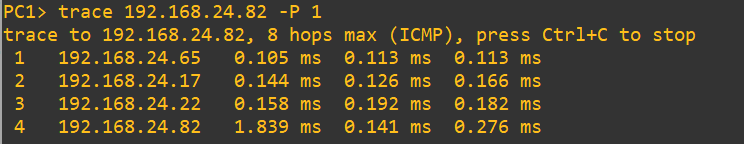
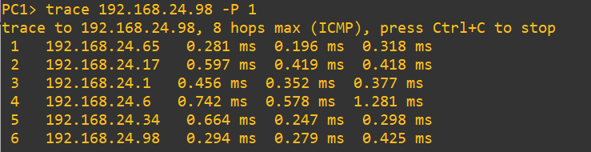
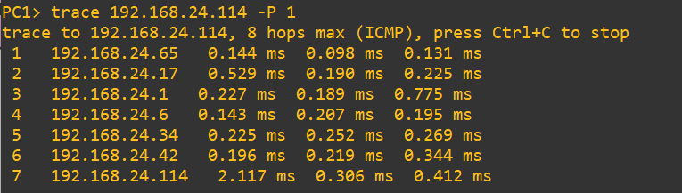

The purpose of this lab is to show how routing in complex topologies can be managed by decomposing them in areas.
First of all, we solve the network addressing problem, by subnetting a block of 128 IPv4 addresses in a suitable number of subnets.
Then, we create the network topology in GNS3 and configure the routers.
Finally, we analyze the routes established by OSPF.

192.168.24.0/25.

/etc/frr to the Additional directories to make persistent.
ip 192.168.24.66/28 192.168.24.65 save
ip 192.168.24.82/28 192.168.24.681 save
ip 192.168.24.98/28 192.168.24.97 save
ip 192.168.24.114/28 192.168.24.113 save
ip 192.168.24.50/28 192.168.24.49 save
sed -i '/^ospfd/s/no/yes/' /etc/frr/daemons echo "service integrated-vtysh-config" > /etc/frr/vtysh.conf chown frr:frr /etc/frr/vtysh.conf touch /etc/frr/frr.conf chown frr:frr /etc/frr/frr.conf vi /etc/frr/frr.confUse the
vi editor to edit the /etc/frr/frr.conf file as follows.
frr version 8.1_git frr defaults traditional hostname R0 no ipv6 forwarding service integrated-vtysh-config ! interface lo ip address 1.1.1.1/32 ip ospf passive ! interface eth0 ip address 192.168.24.65/28 ip ospf passive ! interface eth1 ip address 192.168.24.25/30 ! interface eth2 ip address 192.168.24.18/30 ! router ospf ospf router-id 1.1.1.1 network 192.168.24.16/30 area 1 network 192.168.24.24/30 area 1 network 192.168.24.64/28 area 1 ! line vty !Finally, stop and restart the R0 container to start the ospfd daemon.
sed -i '/^ospfd/s/no/yes/' /etc/frr/daemons echo "service integrated-vtysh-config" > /etc/frr/vtysh.conf chown frr:frr /etc/frr/vtysh.conf touch /etc/frr/frr.conf chown frr:frr /etc/frr/frr.conf vi /etc/frr/frr.confUse the
vi editor to edit the /etc/frr/frr.conf file as follows.
frr version 8.1_git frr defaults traditional hostname R1 no ipv6 forwarding service integrated-vtysh-config ! interface lo ip address 1.1.1.2/32 ip ospf passive ! interface eth0 ip address 192.168.24.81/28 ip ospf passive ! interface eth1 ip address 192.168.24.26/30 ! interface eth2 ip address 192.168.24.22/30 ! router ospf ospf router-id 1.1.1.2 network 192.168.24.20/30 area 1 network 192.168.24.24/30 area 1 network 192.168.24.80/28 area 1 ! line vty !Finally, stop and restart the R1 container to start the ospfd daemon.
sed -i '/^ospfd/s/no/yes/' /etc/frr/daemons echo "service integrated-vtysh-config" > /etc/frr/vtysh.conf chown frr:frr /etc/frr/vtysh.conf touch /etc/frr/frr.conf chown frr:frr /etc/frr/frr.conf vi /etc/frr/frr.confUse the
vi editor to edit the /etc/frr/frr.conf file as follows.
frr version 8.1_git frr defaults traditional hostname R2 no ipv6 forwarding service integrated-vtysh-config ! interface lo ip address 1.1.1.3/32 ip ospf passive ! interface eth0 ip address 192.168.24.97/28 ip ospf passive ! interface eth1 ip address 192.168.24.41/30 ! interface eth2 ip address 192.168.24.34/30 ! router ospf ospf router-id 1.1.1.3 network 192.168.24.32/30 area 2 network 192.168.24.40/30 area 2 network 192.168.24.96/28 area 2 ! line vty !Finally, stop and restart the R2 container to start the ospfd daemon.
sed -i '/^ospfd/s/no/yes/' /etc/frr/daemons echo "service integrated-vtysh-config" > /etc/frr/vtysh.conf chown frr:frr /etc/frr/vtysh.conf touch /etc/frr/frr.conf chown frr:frr /etc/frr/frr.conf vi /etc/frr/frr.confUse the
vi editor to edit the /etc/frr/frr.conf file as follows.
frr version 8.1_git frr defaults traditional hostname R3 no ipv6 forwarding service integrated-vtysh-config ! interface lo ip address 1.1.1.4/32 ip ospf passive ! interface eth0 ip address 192.168.24.113/28 ip ospf passive ! interface eth1 ip address 192.168.24.42/30 ! interface eth2 ip address 192.168.24.38/30 ! router ospf ospf router-id 1.1.1.4 network 192.168.24.36/30 area 2 network 192.168.24.40/30 area 2 network 192.168.24.112/28 area 2 ! line vty !Finally, stop and restart the R3 container to start the ospfd daemon.
sed -i '/^ospfd/s/no/yes/' /etc/frr/daemons echo "service integrated-vtysh-config" > /etc/frr/vtysh.conf chown frr:frr /etc/frr/vtysh.conf touch /etc/frr/frr.conf chown frr:frr /etc/frr/frr.conf vi /etc/frr/frr.confUse the
vi editor to edit the /etc/frr/frr.conf file as follows.
frr version 8.1_git frr defaults traditional hostname R4 no ipv6 forwarding service integrated-vtysh-config ! interface lo ip address 1.1.1.5/32 ip ospf passive ! interface eth0 ip address 192.168.24.17/30 ! interface eth1 ip address 192.168.24.21/30 ! interface eth2 ip address 192.168.24.9/30 ! interface eth3 ip address 192.168.24.2/30 ! router ospf ospf router-id 1.1.1.5 network 192.168.24.0/30 area 0 network 192.168.24.8/30 area 0 network 192.168.24.16/30 area 1 network 192.168.24.20/30 area 1 ! line vty !Finally, stop and restart the R4 container to start the ospfd daemon.
sed -i '/^ospfd/s/no/yes/' /etc/frr/daemons echo "service integrated-vtysh-config" > /etc/frr/vtysh.conf chown frr:frr /etc/frr/vtysh.conf touch /etc/frr/frr.conf chown frr:frr /etc/frr/frr.conf vi /etc/frr/frr.confUse the
vi editor to edit the /etc/frr/frr.conf file as follows.
frr version 8.1_git frr defaults traditional hostname R5 no ipv6 forwarding service integrated-vtysh-config ! interface lo ip address 1.1.1.6/32 ip ospf passive ! interface eth0 ip address 192.168.24.33/30 ! interface eth1 ip address 192.168.24.37/30 ! interface eth2 ip address 192.168.24.10/30 ! interface eth3 ip address 192.168.24.6/30 ! router ospf ospf router-id 1.1.1.6 network 192.168.24.4/30 area 0 network 192.168.24.8/30 area 0 network 192.168.24.32/30 area 2 network 192.168.24.36/30 area 2 ! line vty !Finally, stop and restart the R5 container to start the ospfd daemon.
sed -i '/^ospfd/s/no/yes/' /etc/frr/daemons echo "service integrated-vtysh-config" > /etc/frr/vtysh.conf chown frr:frr /etc/frr/vtysh.conf touch /etc/frr/frr.conf chown frr:frr /etc/frr/frr.conf vi /etc/frr/frr.confUse the
vi editor to edit the /etc/frr/frr.conf file as follows.
frr version 8.1_git frr defaults traditional hostname R6 no ipv6 forwarding service integrated-vtysh-config ! interface lo ip address 1.1.1.7/32 ip ospf passive ! interface eth0 ip address 192.168.24.1/30 ! interface eth1 ip address 192.168.24.5/30 ! interface eth2 ip address 192.168.24.49/28 ip ospf passive ! router ospf ospf router-id 1.1.1.7 network 192.168.24.0/30 area 0 network 192.168.24.4/30 area 0 network 192.168.24.48/28 area 0 ! line vty !Finally, stop and restart the R5 container to start the ospfd daemon.
ping 192.168.24.82 -c 2and verify that answers are received from PC2.
ping 192.168.24.98 -c 2and verify that answers are received from PC3.
ping 192.168.24.114 -c 2and verify that answers are received from PC4.
ping 192.168.24.50 -c 2and verify that answers are received from PC5.

trace 192.168.24.82 -P 1and verify that packets to PC2 are routed through R0 and R1 (shortest path).
trace 192.168.24.98 -P 1and verify that packets to PC3 are routed through R0, R4, R5 and R2 (shortest path).
trace 192.168.24.114 -P 1and verify that packets to PC4 are routed through R0, R4, R5 and R3 (shortest path).
trace 192.168.24.50 -P 1and verify that packets to PC5 are routed through R0, R4 and R6 (shortest path).

trace 192.168.24.82 -P 1and verify that packets are now routed through R0, R4 and R1.

trace 192.168.24.98 -P 1and verify that packets are now routed through R0, R4, R6, R5 and R2.

trace 192.168.24.114 -P 1and verify that packets are now routed through R0, R4, R6, R5, R2 and R3.

vtysh R0# show ip routeThe output should be as follows.
C>* 1.1.1.1/32 is directly connected, lo, 01:51:11 O>* 192.168.24.0/30 [110/20000] via 192.168.24.17, eth2, weight 1, 00:56:56 O>* 192.168.24.4/30 [110/30000] via 192.168.24.17, eth2, weight 1, 00:42:02 O>* 192.168.24.8/30 [110/20000] via 192.168.24.17, eth2, weight 1, 00:03:25 O 192.168.24.16/30 [110/10000] is directly connected, eth2, weight 1, 01:51:11 C>* 192.168.24.16/30 is directly connected, eth2, 01:51:12 O>* 192.168.24.20/30 [110/20000] via 192.168.24.17, eth2, weight 1, 00:03:30 * via 192.168.24.26, eth1, weight 1, 00:03:30 O 192.168.24.24/30 [110/10000] is directly connected, eth1, weight 1, 00:03:30 C>* 192.168.24.24/30 is directly connected, eth1, 01:51:12 O>* 192.168.24.32/30 [110/30000] via 192.168.24.17, eth2, weight 1, 00:03:32 O>* 192.168.24.36/30 [110/30000] via 192.168.24.17, eth2, weight 1, 00:03:32 O>* 192.168.24.40/30 [110/40000] via 192.168.24.17, eth2, weight 1, 00:03:32 O>* 192.168.24.48/30 [110/30000] via 192.168.24.17, eth2, weight 1, 00:34:17 O 192.168.24.64/28 [110/10000] is directly connected, eth0, weight 1, 01:51:11 C>* 192.168.24.64/28 is directly connected, eth0, 01:51:12 O>* 192.168.24.80/28 [110/20000] via 192.168.24.26, eth1, weight 1, 00:03:30 O>* 192.168.24.96/28 [110/40000] via 192.168.24.17, eth2, weight 1, 00:03:32 O>* 192.168.24.112/28 [110/40000] via 192.168.24.17, eth2, weight 1, 00:03:18In R0's routing table there is an entry for each of the 14 subnets.
Copyright (c) 2024 - Roberto Canonico
Last updated: October 3, 2024 by Roberto Canonico